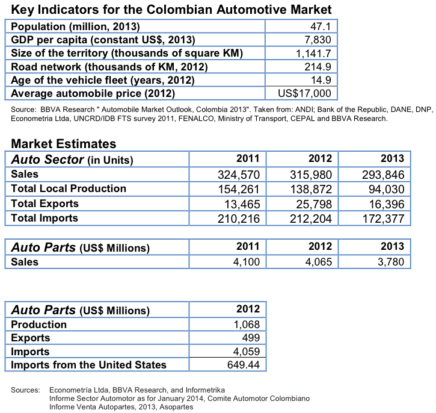

Automotive
Overview

Colombia is a major player in the regional automotive market. The Colombian automotive sector experienced a decrease of 7 percent from 2012 to 2013. Despite this decline, 2013 was the third best year of auto sales ever in Colombia. Auto parts sales were US$3.780 billion, declining also 7 percent from 2012 to 2013.
According to the leading automotive parts industry association in Colombia, Asopartes among the reasons for this reduction are: a) new technologies have made auto parts last longer, b) sales underreporting c) an increase in the sale of illegal used auto parts, and d) smuggling (contraband of automotive parts).1
1 Informe Venta Autopartes, 2013, Asopartes
At the beginning of 2013 there were 9.3 million vehicle units in the country, according to data from the Ministry of Transportation. Of those, 507,355 were registered for transportation (freight and passengers). According to research conducted by the multinational banking group BBVA in 2013, Colombia’s vehicle stock will increase by 3.5 million between 2010 and 2020.2
The same study establishes that the automotive sector contributes to 4 percent of the country’s GDP and employs about 3.2 percent of the country’s population. Colombia currently ranks as the third largest automobile manufacturer in Latin America. In addition, after Brazil, Colombia is the second largest motorcycle producer in the region, with an annual output of 515,000 motorcycles.
A number of international auto manufacturers currently produce vehicles in Colombia. General Motors (GM), based in Bogota, has an annual capacity of about 100,000 units, and in 2013 opened a stamping plant to manufacture and export the body sections to markets in Central America and South America. Renault, based in Medellin, has an annual capacity of 80,000 units. Mazda Motor, also based in Bogota, has a capacity of 15,000 units annually. Automaker Daimler's subsidiary Daimler Colombia operates a CKD assembly facility in Bogota.3
68 brands and 267 models are found in the market. The biggest seller is Chevrolet, followed by Renault and Kia. Nissan has grown at a fast rate in recent years, and is in fourth place.4
In 2012, the percentage of nationally produced vehicles was 40 percent. The other 60 percent of vehicles were imported from South Korea, Mexico, India, Japan, Ecuador, China, and the United States. The high import percentage represents good opportunities for all imported parts and accessories, especially those from the United States, which are very well known and regarded nationwide.
Firms from more than 106 countries compete to supply the Colombian automotive parts market. The United States, Brazil, Japan and China have the highest market shares. Firms from the United States and Brazil compete with quality and state-of-the-art products, while firms from many Asian countries have obtained a larger market share pursuing a low price strategy and offering lower quality.
The annual production of automotive parts in Colombia is equivalent to US$1.068 billion of which 47 percent is exported (US$499 billion) to Venezuela, Ecuador, the United States, Germany, and South Africa. Imports represented US$4.059 billion. Main countries of origin are the United States (16 percent), China (14 percent), Japan (8 percent), and India (7 percent).5
Colombian end-users of automotive parts and accessories are numerous, varied, and difficult to quantify because of the wide variety of brands found in the local market and the number of motor vehicles imported.
2 BBVA Research " Automobile Market Outlook, Colombia 2013
3 Colombia Autos Report 2014, Business Monitor International
4 Informe Sector Automotor as for January 2014, Comite Automotor Colombiano
5 BBVA Research " Automobile Market Outlook, Colombia 2013
83 percent of total Colombian vehicles are for private use; 14 percent are in public service and 3 percent are for official use (not including those owned by the Ministry of Transportation, the Ministry of Defense, and the Ministry of Foreign Relations).
Best Prospects/Services
Best prospects for Automotive Parts and Accessories are:
- Gasoline and diesel engines, piston rings, cast-iron engine parts, carburetors, engine valves, other cast-iron engine parts, fuel-injection pumps
- Electric storage batteries, nickel-cadmium storage batteries, electrical distribution parts, terminals, electrical splices and electrical couplings, boards, panels, consoles
- Cabinets for motor vehicles, bodies for passenger automobiles, body stampings, gearboxes, drive axles with differential, suspension shock absorbers, radiators, clutches, suspension systems, parts for power trains, brake parts
- Shock Absorbers
- Lights, high and low beam and also decorative lights
- Air Filters and Oil Filters
- Windshields
- Gaskets for the engine
- Other cast-iron engine parts
- Tires for small vehicles, trucks and buses
- Parts of fans, ventilating hoods, air conditioning and parts for motor vehicles
- Ball bearings, tapered roller bearings, roller bearings, gaskets and similar joints of metal sheeting
- Tire Retreading Equipment
Tire recycling operators
Opportunities
With regard to auto parts, Colombia is the United States’ fifth largest trading partner in Latin America and the United States is Colombia’s third largest trading partner after China and Mexico. Colombia’s competitive economy provides opportunities for U.S. manufacturers. Two main areas for opportunities in the automotive industry in Colombia are:
Vehicles: Public transport systems in the principal cities (Bogota, Barranquilla, Bucaramanga, Cartagena, Cali, Pereira, among others). Cities will increase the purchase of new vehicles and a standardization of existing models. The city of Bogota launched the “Plan de Ascenso Tecnológico”, (Technological Improvement Plan) a technology improvement plan for zero or low carbon emissions in the mass transportation sector for Bogota – Transmilenio Bus Rapid Transit (BRT). The plan contemplates replacing the current fleet with low emission buses.
Auto parts: The high vehicle import percentage represents good opportunities for all imported parts and accessories, especially for U.S. products which are very well known and regarded nationwide. Additionally, under the FTA agreement which entered entered into effect on May 15, 2012, some parts and auto parts (which were previously assessed a tariff of 13 percent on average) currently enter the Colombian market tariff free, while tariffs on other parts will be reduced to zero over the next 5-10 years.
With this implementation Colombia is accepting re-manufactured auto parts listed under Chapter Four, Rules of Origin and Origin Procedures, Section A - Rules of Origin, ANNEX 4.18. Goods classified in the following Harmonized System subheadings may be considered remanufactured goods that would be allowed to be imported into Colombia 8702, 8703, 8704.21,8704.31, 8704.32, 8706, and 8707:8408.10, 8408.20, 8408.90, 8409.91, 8409.99, 8412.21, 8412.29, 8412.39, 8412.90, 8413.30, 8413.50, 8413.60, 8413.91, 8414.30,8414.80,8414.90,8419.89,8431.20,8431.49,8481.20, 8481.40,8481.80,8481.90,8483.10,8483.30,8483.40,8483.50,8483.60,8483.90,8503.00, 8511.40,8511.50,8526.10,8537.10,8542.21,8708.31,8708.39,8708.40,8708.60,8708.70, 8708.93,8708.99,9031.49.
Other provisions of the FTA include strong protection for U.S. investors (legal stability), expanded access to service markets, greater intellectual property rights protection, market access for remanufactured goods, increased transparency and improved dispute settlement mechanisms (arbitration). Under the National Treatment Caveat within the FTA, U.S. companies must be treated as locals when they participate in public bids, eliminating the disadvantage they used to face prior to the signing of the agreement.
Other end-users are as follows:
- Dealers and Distributors of Imported Vehicles
- Freight and Passenger Transportation Companies
- Importers and Distributors of Automotive Parts and Accessories
- Repair and Maintenance Shops Service Stations, Gasoline Dealers and Lubrication Centers
- Tire Distributors
- Government Agencies Other End-Users: rental car and limousine companies.
Resources
U.S. Commercial Service Bogotá contact: Carolina Arregoces Email: Carolina.arregoces@trade.gov Tel: (571) 275-2755
Key Contacts ASOPARTES (Association of Automotive Parts Importers and Dealers): www.asopartes.com.co
DIAN (Colombian Customs): www.dian.gov.co
COLOMBIAN GOVERNMENT: www.gobiernoenlinea.gov.co
DANE (Statistics Bureau): www.dane.gov.co
MINISTRY OF TRANSPORTATION: www.mintransporte.gov.co
28 ANDI (National Industrialists Association): www.andi.com.co
ACOLFA (Association of Automotive Parts Manufacturers): www.acolfa.com.co
FENALCO (National Merchants Federation): www.fenalco.com.co
PROEXPORT COLOMBIA (Export Promotion): www.proexport.com.co
Parts and Accessories HS Codes